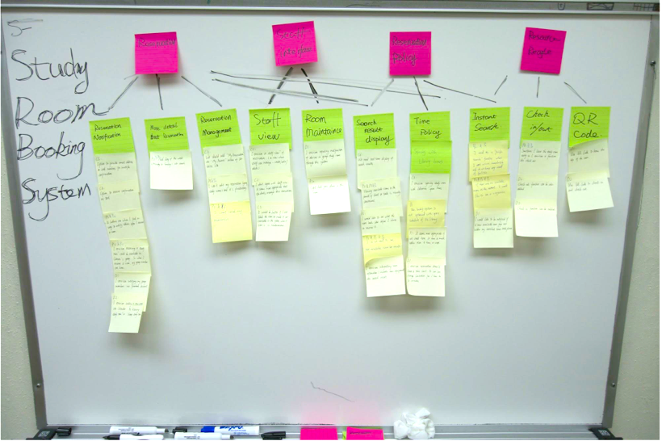
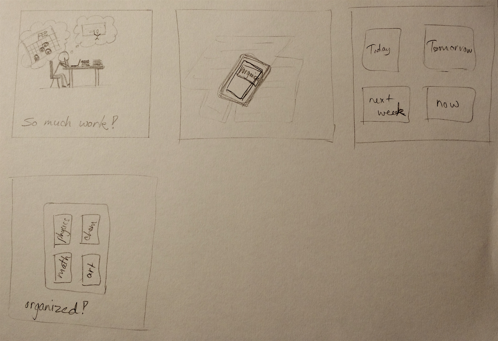
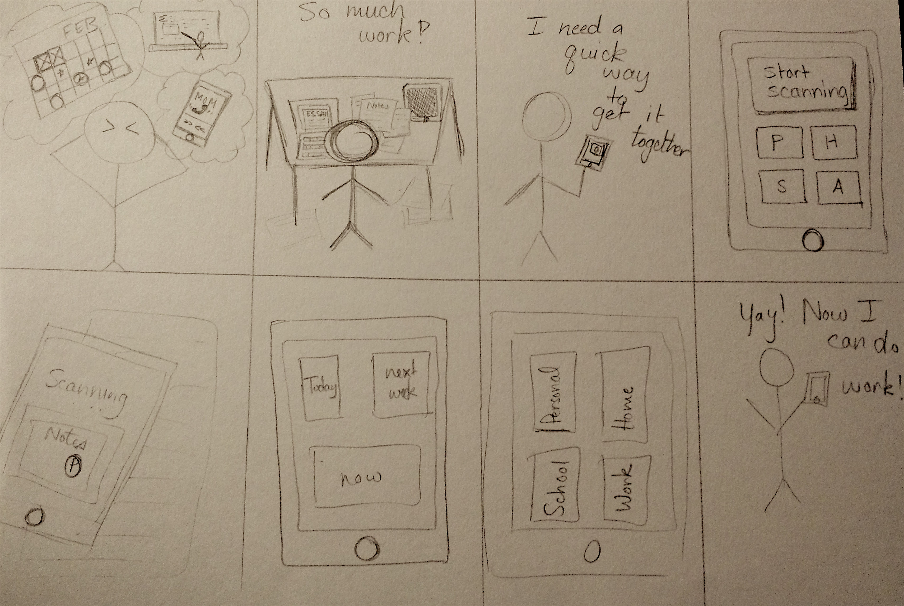
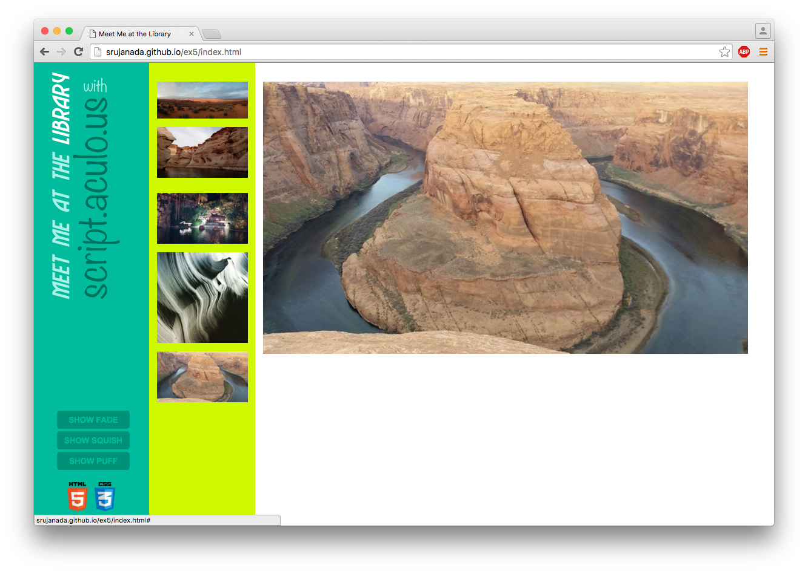
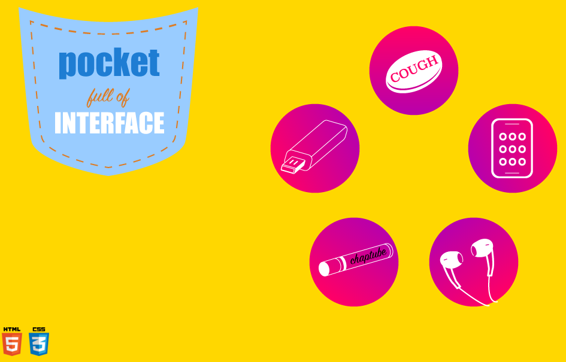
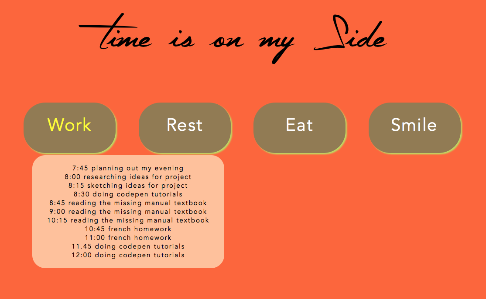
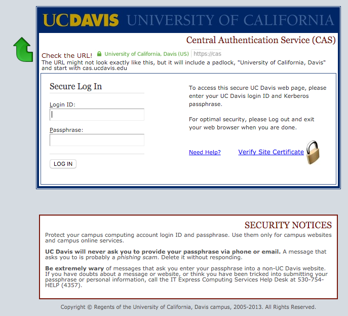
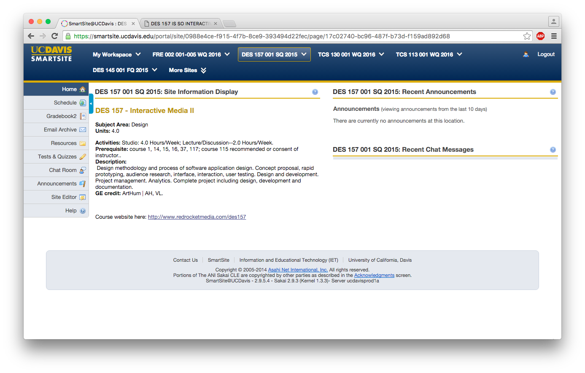

Srujana's Blog
February 18th, 2016
Chapter 5: Extracting Interaction Design Requirements
This chapter spoke about a gap existing between analysis and design, taking place in two
spans. These include needs and requirements, as well as design informing models, the former of
which will be covered in this chapter.
Analysis, or contextual inquiry as the book refers to it, is about understanding existing work
practice and context. It is only after this is performed that we are able to design a new way
of getting something done. However, a process exists in between that involved extracting
requirements from the contextual data. These requirements in the UX domain are those which
support user work activity needs, ensure the usefulness component of the user experience and
fulfill the need for emotional impact.
Bridging the gap between analysis and design is done by using a deductive thinking process to
come up with several requirement statements. The book suggests that a team of consisting of
both software engineers and UX people be put together to go over the Work Activity Affinity
Diagram, with all the requirement statements, with a team leader to keep them on track and a
recorder to write down the requirements they come up with. Basically they will consolidate the
ideas that are on the WAAD. Interaction design requirements now imply functionality and you can
use this to include SE people in the process. Additionally, you can standardize the terminology
so that everyone is on the same page. It is also important to prioritize your requirements, and
a good way to do this is to ask your customer and users to mark the requirements that are of a
higher concern, that way you know which to address first. Lastly, take all of the requirements
you have extracted back to the customer for validation, and avoid technical jargon. Allow them
to provide feedback and check if your interpretation of the requirements from the work activity
notes is accurate. There are some abridged methods for requirement extraction, such as using
the WAAD itself as implicit requirements without extracting them as this saves time and cost.
In addition, building the WAAD is better suited for organizing large amounts of data to
identify themes and relationships. If there aren’t that many work activity notes in the first
place, you don’t need one! You can identify relationships among the work activity notes
themselves, and deduce requirements mentally.
My critique is that this seems like a very efficient method to get through the process of
finding requirements. However, it is a bit vague. The pros are that the lack of rigidity
allows a team to cater the process to their project, but they must be good at mentally
extracting requirements from the notes provided. The example I chose depicts a work study
room booking system with various layers. The pink are categories while the green seem to be
work activity notes and the yellow are the requirements that have been extracted.
CHAPTER 5 Write-up

February 16th, 2016
For round one of the storyboarding exercise, I attempted to portray a situation where a user is
experiencing a problem that my project idea could fix. The user, or "student" in this scenario is
going through a period of stress due to deadlines and too much work on their hands. The app is shown
on a phone with a large button that says "ORGANIZE" which when used, organizes the work by date and
subject, solving the issue. I could have further shown in my sketches that the project was successful
by depicting the user in a joyful manner, and I could have elaborated on how exactly it solved the
issue, which I attempted to do in the second round.

For round two of the storyboarding exercise, I provided more details on how the app could work by
scanning in a symbol which interacts with recognition software and quickly categorizes the notes into
folders or containers organized by date or subject. I tried to convey that the folders are customizable
by using letters rather than names. I showed a more detailed interface in these sketches and also a happy
user in the last pane. I received a few suggestions that I definitely plan to incorporate into the plan,
such as narrowing the functionality to work without augmented reality, which I believe may be an unnecessary
component. I think I may change the focus of the app to better suit a task manager and organizer for tasks
entered in by the user while having it connect to UC Davis classes by providing an interactive interface
that allows for better goal/time management between professors and students.

February 11th, 2016
For Ex5, I chose to explore the script.aculo.us library. It appealed to me because I believed it would
be useful for my final project, particularly the drag and drop feature, as well as the sortable list effect.
In addition, there were many other effects that I wanted to check out, such as the shake, pulsate, or puff
that I implemented with some of the pictures. My main hurdle with this library is that it does not have
compatibility with jQuery, which is a huge disadvantage. I spent a long while trying to get them to work with each
other, until I realized with some online research that it was not an option. For this reason, I would not particularly
recommend this library to my peers, as jQuery is much more effective, dynamic, and can actually do many of the things
that script.aculo.us can.
article/slideshow: http://script.aculo.us/

February 4th, 2016
This is my interface for my Pocket Full of Interface project. I connected the various visual
elements of my design by utilizing a common color scheme and the round button-like shape. I used a
gradient in order to give my elements dimension. When hovered, the image changes in content and size,
allowing the user to interact with it smoothly. I used the animate function to achieve this. Another
effective aspect I think is the circle that the elements are arranged in. A third aspect is the click
function that pulls up an overlay that provides more information about the element that is being explored.

January 28, 2016
This is my Time is On My Side. I was struggling with the functions, so it did not turn out exactly how I planned.
I really did enjoy this project, but I just to give myself more time to figure out the technical aspects.
I also spent a great deal of time trying to get my project to animate, even though it wasn't part of the requirements
so I regret wasting that time instead of focusing on getting it to work. I want to add more features such as color code
the hour by using a span tag for each element. In addition, I want to add a click feature. However, I did learn a great
deal of jquery, which I find very fun! I see a lot of potential for my next project; I just have to start early and give myself lots of time to experiment.

January 19, 2016
A web-based form I use often is the log-in screen for UC Davis web applications.
It features two input boxes, one for the Login ID, and one for the Passphrase. The layout is
friendly as it is clear where the input boxes are and they are clearly labelled. The type hierarchy
is working as it shows what the page is, with "Secure Log In" in the biggest font size. The Login ID
and Passphrase labels could be larger so that the user does not get confused with the other type that is
the same size. The color scheme is professional and apt for a university, but it could use with a bit of
livening up. The various colors of the type work well to point out and distinguish the links from the
static type.
article/slideshow: http://www.slideshare.net/billder/learning-ixd-from-everyday-objects

January 7, 2016
An interface that I frequently use is the smartsite for UC Davis.
An aspect of the design for the website interface that I found to
be quite effective is that the navigation is very clear. The menus
stay in the same place regardless of the page that is being visited,
and this is appealing as it does not confuse the user. I also
appreciate the responsive design that makes the content quite fluid,
such as the top blue menu that expands down to fit the sections if
the browser is made smaller. The side menu changes content depending
on the class that has been selected at the top. Visually, I think
the type hierarchy is working well and each section has its own
space. I personally feel that the overall look could be made more
appealing with better color choices and shapes, and maybe even some
motion graphics. However, I think the current colors convey a
professional sense to the user, and the interface serves the
functional purpose of an organizational website for communication
between students and teachers.
